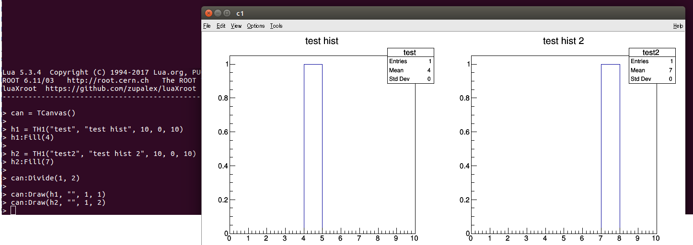

This section present the binders to the ROOT classes natively supported by luaXroot.
It is possible for the user to add custom binders to other ROOT classes or extend the ones provided. This is the subject of this section.
Reminders:
- Each argument is specified using the following nomenclature: < type, default value if any >
Examples:, < float, 3.14157 >, < string, "O_RDONLY | O_NONBLOCK" >, ... - A [o] in front of an argument means that it's optional.
- Some functions takes an arguments table. In this case the arguments are enclosed with { ... }. Each argument inside the table has a name that MUST be specified when calling the function. The advantage of arguments tables is that optional arguments can be omitted completely when calling the function, and passed in any order.
Index of the ROOT libraries binders section:
General binders
TCanvas
TFile
TF1
TGraphErrors
click to expand
- TGraph (constructor no arguments)
- TGraph (constructor 1 argument)
- TGraph (constructor 3 arguments)
- TGraph (constructor 5 arguments)
- TGraph (constructor arguments table)
- TGraph.SetTitle
- TGraph.GetTitle
- TGraph.GetMaxSize
- TGraph.GetPoint
- TGraph.GetPointError
- TGraph.SetNPoint
- TGraph.SetPoint
- TGraph.SetPointError
- TGraph.RemovePoint
- TGraph.Eval
- TGraph.Fit
- TGraph.Clone
TH1D
click to expand
TH2D
TSpectrum
TCutG
click to expand
TTree
- read : open the file to be read only.
- update : open the file and keep any previous content. The file is created if it did not exist before.
- recreate : create the file and erase any previous content if the file already existed.
- read : open the file to be read only.
- update : open the file and keep any previous content. The file is created if it did not exist before.
- recreate : create the file and erase any previous content if the file already existed.
- read : open the file to be read only.
- update : open the file and keep any previous content. The file is created if it did not exist before.
- recreate : create the file and erase any previous content if the file already existed.
- nbinsx for a the range xmin to xmax for the X axis.
- nbinsy for a the range ymin to ymax for the Y axis.
General binders
ListCurrentDirectory
( )
Return values: nil
Display the list of the object in the active directory.
GetObject
( type=< string >, name=< string > )
Return values: requested type
Search the active directory for a ROOT object with named name and with the type type.
TObject.SetName
( name=< string > )
Return values: nil
Set the name as the name of object. The name cannot contain any space or special character. This function is a common method to all ROOT objects. It is a method and need an object to be called.
Example
local hist = TH1()
hist:SetName("new_histogram_name")
TObject.GetName
( )
Return values: string
Retrieve the name of object. This function is a common method to all ROOT objects. It is a method and need an object to be called.
Example
local hist = TH1() hist:GetName()
TObject.Write
( )
Return values: nil
Writes object to the current active directory or file. This function is a common method to all ROOT objects. It is a method and need an object to be called.
Example
local file = TFile("myfile.root", "recreate")
local hist = TH1()
file:cd()
hist:Write()
file:Close()
TObject.Draw
( opts=< string, "" > )
Return values: nil
Send a request to theApp to display and update this object.
Example
local hist = TH1() hist:Fill(4) hist:Draw()
TObject.Update
( )
Return values: nil
Send a request to the theApp to update this object. If an histogram has recently been filled or the range changed, this will notify theApp that the object should be updated.
This function is a common method to all ROOT objects. It is a method and need an object to be called.
Example
local hist = TH1() hist:Draw() hist:Fill(4) -- the histogram will still appear empty on the screen hist:Update() -- the histogram request an update, theApp will process it and update the display on screen
TCanvas
TCanvas (constructor no arguments)
( )
Return values: TCanvas
Creates a new object of type TCanvas.
TCanvas.Divide (constructor no arguments)
( nrow=< int >, ncol=< int > )
Return values: nil
Divide the TCanvas into nrow rows and ncol columns, creating as many sub-canvas.
TCanvas.Draw
( root_obj=< any drawable ROOT object >, draw_opts=< string >, nrow=< int >, ncol=< int > )
Return values: nil
Draw root_obj with the options draw_opts in the sub-canvas of the canvas (nrow, ncol).
TCanvas.Update
( )
Return values: nil
Refresh the canvas and all its sub-canvas.
TCanvas.Clear
( )
Return values: nil
Clears the content of the canvas, deleting all its sub-canvas.
TCanvas.Close
( )
Return values: nil
Closes the canvas.
TFile
TFile (constructor no arguments)
( )
Return values: TFile
Creates a new object of type TFile.
TFile (constructor 2 arguments)
( name=< string >, opts= < string > )
Return values: TFile
Creates a new object of type TFile and opens it using argument name.
opts are:
TFile (constructor arguments table)
( { name=< string >, mode=< string > } )
Return values: TFile
Creates a new object of type TFile and opens it using argument name.
mode can be:
TFile.ls
( )
Return values: nil
List the content of a file and print it on the screen.
TFile.cd
( )
Return values: nil
Set this TFile to be the active file.
TFile.Open
( name=< string >, opts= < string > )
Return values: nil
Open a file using argument name.
opts are:
TFile.Close
( )
Return values: nil
Closes the file.
TFile.GetObject
( type=< string >, name=< string >)
Return values: type of the object OR nil if no object is found
Performs the same operation as the static GetObject but does not require that this file is the current active file.
TF1
TF1 (constructor no arguments)
( )
Return values: TF1
Creates a new object of type TF1
TF1 (constructor 2 arguments)
( { name=< string >, formula=< string > } )
Return values: TF1
Creates a new object of type TF1 and set its name to name.
formula must be a string specifying a predefined ROOT function or a simple formula
Example
local f1 = TF1("func1", "gaus") -- will create a gaussian function
local f2 = TF1("func2", "[0]*x + [1]") -- will create a simple polynomial function of order 1
See this link for more infos.
TF1 (constructor 4 arguments)
( { name=< string >, formula=< string >, xmin=< double >, xmax=< double > } )
Return values: TF1
Creates a TF1 similarly to TF1 with 2 arguments. The additionnal xmin and xmax arguments set the boundaries of the function.
See this link for more infos.
TF1 (constructor 5 arguments)
( { name=< string >, formula=< function >, xmin=< double >, xmax=< double >, npars=< int > } )
Return values: TF1
Creates a new object of type TF1 and set its name to name, while xmin and xmax arguments set the boundaries of the function
formula must be a Lua function and npars the number of parameters in the function.
Example
local function poly1(x, a, b)
return a*x + b
end
local f2 = TF1("func2", poly1, -5, 5, 2) -- the number of parameters of poly1 MUST be specified.
-- It is equal to 2 here as x is NOT a parameter
TF1 (constructor 6 arguments)
( { name=< string >, formula=< function >, xmin=< double >, xmax=< double >, npars=< int >, ndim=< int > } )
Return values: TF1
Creates a new object of type TF1 similarly to TF1 with 5 arguments. The additional ndim arguments specify the dimension of the function.
TF1 (constructor arguments table)
( { name=< string >, [o] formula=< string >, [o] fn=< function >, [o] xmin=< double>, [o] xmax=< double >,
[o] npars=< int >, [o] ndim=< int > } )
Return values: TF1
Creates a new object of type TF1 and sets its name to name.
The arguments are exactly the same as for the previously discussed constructors. The formula OR fn field must be provided. Only 1 of the 2 can be specified.
If fn is specified, it must be a function and xmin, xmax and npars are required.
Example
local function poly1(x, a, b)
return a*x + b
end
local f1 = TF1({ name = "func1", fn = poly1, xmin = -5, xmax = 5, npars = 2)
TF1.SetParameter
( parn=< int >, val=< double >)
Return values: nil
Set value parameter number parn using value.
TF1.SetParameters
( vals=< double >)
Return values: nil
Set the values of all the parameters using the table vals.
Example
local function poly2(x, a, b, c)
return a*x^2 + b*x +c
end
local f1 = TF1({ name = "my_pol2", fn = poly2, xmin = -5, xmax = 5, npars = 3)
f1:SetParameters( { 2, 6, -4 } ) -- this will set a to 2, b to 6 and c to -4
TF1.GetParameter
( parn=< int >)
Return values: double
Retrieve the value of parameter number parn.
TF1.GetParameters
( )
Return values: table
Retrieve the value of all the parameters and returns them in a table.
TF1.GetChi2
( )
Return values: double
Retrieve the value of all the Chi2 associated to the last performed fit using this function (see TGraph.Fit or TH1D.Fit).
TF1.Eval
( x> )
Return values: double
Evaluate the coordinate for the abscissa x.
TGraphErrors
TGraph (constructor no arguments)
( )
Return values: TGraph
Creates a new object of type TGraph.
TGraph (constructor 1 argument)
( npoints=< int > } )
Return values: TGraph
Creates a new object of type TGraph and sets its amount of points to npoints.
TGraph (constructor 3 arguments)
( npoints=< int >, xs=< table >, ys=< table > } )
Return values: TGraph
Creates a new object of type TGraph and sets its amount of points to npoints.
It then uses the tables xs and ys to set the values of these points. The size of xs and ys must be npoints.
TGraph (constructor 3 arguments)
( npoints=< int >, xs=< table >, ys=< table >, errxs=< table >, errys=< table > } )
Return values: TGraph
Creates a new object of type TGraph and sets its amount of points to npoints.
It then uses the tables xs and ys to set the values of these points and errxs and errys to set the errors respectively. The size of xs, ys, errxs and errys must be npoints.
TGraph (constructor arguments table)
( { npoints=< int >, [o] xs=< table >, [o] ys=< table >, [o] errxs=< table>, [o] errys=< table > } )
Return values: TGaph
Creates a new object of type TGraph and sets its amount of points to npoints.
If xs is specified, then ys is required as well. Same goes for errxs and errys.
The meaning of xs, ys, errxs and errys is the same as in the previous constructors.
TGraph.SetTitle
( title=< string > )
Return values: nil
Set the title of the TGraph using title.
TGraph.GetTitle
( )
Return values: string
Retrieve the title of the TGraph.
TGraph.GetMaxSize
( )
Return values: int
Retrieve the maximum amount of points in the TGraph.
TGraph.GetPoint
( n=< int > )
Return values: table
Retrieve the x and y value of point n and returns them in a table as
{
[1] = x,
[2] = y
}
TGraph.GetPointError
( n=< int > )
Return values: table
Retrieve the errors associated to x and y for the point n and returns them in a table as
{
[1] = errx,
[2] = erry
}
TGraph.SetNPoint
( n=< int > )
Return values: nil
Modify the maximum number of point in the TGraph and set it to n. If n is smaller than the previous size, any extra points are discarded. If n is smaller than the previous the new points are initialized at ( 0 , 0).
TGraph.SetPoint
( n=< int >, x=
Return values: nil
Set the x and y values of point n using x and y.
TGraph.SetPointError
( n=< int >, errx=
Return values: nil
Set the errors on the x and y values of point n using errx and erry.
TGraph.RemovePoint
( n=< int > )
Return values: nil
Removes point number n.
TGraph.Eval
( x=< double > )
Return values: double
Evaluates the coordinate associated to the abscissa x using interpolation.
TGraph.Fit
( { fn=< TF1 >, [o] xmin=< double >, [o] xmax=< double >, [o] opts=< string > } )
Return values: nil
Fit the TGraph using the function fn. If xmin and xmax are specified, the fit will consider only that range.
opts is a string specifying options for the fit. See this link for more information.
TGraph.Clone
( )
Return values: TGraph
Creates a clone of this TGraph.
TH1D
TH1 (constructor no arguments)
( )
Return values: TH1
Creates a new object of type TH1.
TH1 (constructor 5 arguments)
( name=< string >, title=< string >, nbinsx=< int >, xmin=< double>, xmax=< double > )
Return values: TH1
Creates a new object of type TH1 and sets its name and title to name and title respectively.
The TH1 will be created with nbinsx for a the range xmin to xmax.
TH1 (constructor arguments table)
( { name=< string >, title=< string >, nbinsx=< int >, xmin=< double>, xmax=< double > } )
Return values: TH1
Same as above but with the arguments passed inside a table instead.
TH1.SetTitle
( title=< string > )
Return values: nil
Set the title of the TH1 to title.
TH1.GetTitle
( )
Return values: string
Retrieves the title of the TH1.
TH1.Fill
( x=< double>, [o] weight=< int, 1 > )
Return values: nil
Increment the bin containing the abscissa x by weight.
TH1.Reset
( )
Return values: nil
Reset the histogram, deleting all its content.
TH1.Rebuild
( )
Return values: nil
Recompute the arrays for contents and errors.
TH1.Scale
( s=< double > )
Return values: nil
Rescale the histogram by a factor of s.
TH1.SetRangeUserX
( xmin=< double >, xmax=< double > )
Return values: nil
Set the range of the X axis using user values. This means that xmin and xmax should be the actual value on the X axis and not bin numbers.
TH1.SetRangeUserY
( ymin=< double >, ymax=< double > )
Return values: nil
Set the range of the Y axis using user values. This means that ymin and ymax should be the actual value on the Y axis and not bin numbers.
TH1.SetXProperties
( nbinsx=< int>, xmin=< double >, xmax=< double > )
Return values: nil
Change the properties of the X axis allowing to effectively expand the X axis further than when originally set.
Unlike the ROOT function SetBins which shifts the content of the histograms, this function leaves it untouched. The downside is that it can be be a heavy computation when dealing with large histograms.
TH1.GetXProperties
( )
Return values: table
Retrieve the current properties of the X axis and returns them in a table:
{
[1] = nbinsx,
[2] = xmin,
[3] = xmax
}
TH1.GetContent
( )
Return values: table
Retrieve the content of the histograms and returns it as a table:
{
[1] = table containing the bins with a content > 0,
[2] = table containing the content of the bins stored in [1]
}
TH1.Fit
( { fn=< TF1 >, [o] xmin=< double >, [o] xmax=< double >, [o] opts=< string > } )
Return values: nil
Fit the TH1 using the function fn. If xmin and xmax are specified, the fit will consider only that range.
opts is a string specifying options for the fit. See this link for more information.
TH1.Clone
( )
Return values: TH1
Returns a clone of the TH1.
TH1.Clone
( hist=< TH1 >, [o] s=< double >)
Return values: TH1
Add the histogram hist to the TH1 using the scale s. A scale of -1 would perform a substraction of the 2 histograms.
TH2D
TH2 objects have the same methods as TH1 and are not repeated here. Only the methods exclusive to TH2 or the ones which share a same name but are different are explicitely described.
TH2 (constructor no arguments)
( )
Return values: TH2
Creates a new object of type TH2.
TH2 (constructor 7 arguments)
( name=< string >, title=< string >, nbinsx=< int >, xmin=< double>, xmax=< double >,
nbinsy=< int >, ymin=< double>, ymax=< double > )
Return values: TH2
Creates a new object of type TH2 and sets its name and title to name and title respectively.
The TH2 will be created with:
TH2 (constructor arguments table)
( { name=< string >, title=< string >, nbinsx=< int >, xmin=< double>, xmax=< double >,
nbinsy=< int >, ymin=< double>, ymax=< double > } )
Return values: TH2
Same as above but with the arguments passed inside a table instead.
TH2.Fill
( x=< double>, y=< double>, [o] weight=< int, 1 > )
Return values: nil
Increment the bin containing the abscissa x and the coordinate y by weight.
TH2.ProjectX
( ymin=< double>, ymax=< double> )
Return values: TH1
Returns the projection on the X axis of the range ymin to ymax.
TH2.ProjectY
( xmin=< double>, xmax=< double> )
Return values: TH1
Returns the projection on the Y axis of the range xmin to xmax.
TH2.GetProjectionX
( )
Return values: TH1
Returns the last projection performed on the X axis.
TH2.GetProjectionY
( )
Return values: TH1
Returns the last projection performed on the Y axis.
TH2.SetYProperties
( nbinsy=< int>, ymin=< double >, ymax=< double > )
Return values: nil
Change the properties of the Y axis allowing to effectively expand the Y axis further than when originally set.
Unlike the ROOT function SetBins which shifts the content of the histograms, this function leaves it untouched. The downside is that it can be be a heavy computation when dealing with large histograms.
TH2.GetYProperties
( )
Return values: table
Retrieve the current properties of the Y axis and returns them in a table:
{
[1] = nbinsy,
[2] = ymin,
[3] = ymax
}
TSpectrum
TSpectrum (constructor no arguments)
( )
Return values: TSpectrum
Creates a new object of type TSpectrum.
TSpectrum (constructor no arguments)
( npeaks=< int > )
Return values: TSpectrum
Creates a new object of type TSpectrum and set the amount of peaks to use when performing a Search.
TSpectrum.Background
( histname=< string >, niter=< int >, [o] opts=< string, "" > )
Return values: TH1
Evaluate the background and returns it as a TH1. More information on the process can be found here.
TSpectrum.DrawBackground
( )
Return values: nil
Draw the result of the last background estimation.
TSpectrum.GetBackground
( )
Return values: TH1
Returns the result of the last background estimation. If no background estimation has been performed yet, it retusn nil.
TSpectrum.Search
( histname=< string >, sigma=< double >, opts=< string >, threshold=< double > )
Return values: nil
Performs a peak search in the histogram identified by histname. The parameter npeaks used when constructing the TSpectrum is used as the maximum number of peaks that can be found.
sigma is the expected sigma of the peaks that the function should find.
threshold is setting the minimum amplitude that a peak needs to have to be considered in the search. This threshold is set as a percentage of the peak with the biggest amplitude.
opts are options described here. If none is required, set this argument to "".
TSpectrum.GetNPeaks
( )
Return values: int
Returns the amount of peaks found during the last Search.
TSpectrum.GetPositionX
( )
Return values: table
Returns the positions of the peaks found during the last Search and returns them in a table.
TSpectrum.GetPositionY
( )
Return values: table
Returns the amplitude of peaks found during the last Search and returns them in a table. The ordering of these amplitudes corresponds to the ordering of the peaks position returned by GetPositionX.
TCutG
TCutG (constructor no arguments)
( )
Return values: TCutG
Creates a new object of type TCutG.
TCutG.IsInside
( x=< double >, y=< double > )
Return values: bool
Check wether or not the point with the coordinates ( x, y ) is inside the graphical cut defined by TCutG.
TCutG.Clone
( )
Return values: TCutG
Creates clone of the TCutG.
TTree
TTree (constructor no arguments)
( )
Return values: TTree
Creates a new object of type TTree.
TTree (constructor 2 arguments)
( name=< string >, title=< string > )
Return values: TTree
Creates a new object of type TTree and set its name and title to name and title respectively.
TTree (constructor arguments table)
( { name=< string >, title=< string > } )
Return values: TTree
Creates a new object of type TTree and set its name and title to name and title respectively.
TTree.GetEntries
( )
Return values: unsigned long long int
Returns the total number of entries in the TTree.
TTree.GetEntry
( n=< unsigned long long int > )
Return values: nil
Retrieves the values of the branches of the TTree for the entry number n and accordingly sets the values of the variables that attached to these branches ( see TTree.NewBranch and TTree.GetBranch). Entry numbers starts from 0.
TTree.Fill
( )
Return values: nil
Uses the values of the variables that are attached to the branches of the TTree ( see TTree.NewBranch and TTree.GetBranch) to create a new entry.
TTree.NewBranch
( { type=< string >, name=< string > } )
Return values: userdata of type specified by type
Creates a new branch for the TTree of type type. This function returns an object of type type that can be used to either set the value of the branch or reads from it. It means that if the type specified for the branch is "int", it won't return a plain integer but a userdata associated to an int as discussed here.
Example:
local tree = TTree("mytree", "a example of tree")
local b1 = tree:NewBranch( { name="branch1", type="int"} )
b1:Set(6)
tree:Fill() -- the tree now contains one entry for which the value of branch1 is 6
b1:Set(17)
tree:Fill() -- the tree contains now 2 entries. First one has a value of 6 for branch1
-- the second one has a value of 17 for branch 1.
TTree.GetBranch
( { name=< string > } )
Return values: userdata of type of the branch with the name name
Retrieves an existing branch of the TTree with name name. This function returns an object which will act as a link to this branch.
Example:
-- [ ... assuming we have the TTree created in the example of TTree.NewBranch ... ] local br = tree:GetBranch( { name="branch1" } ) tree:GetEntry(1) print(br:Get()) -- will print 17 as the value of branch1 for the second entry was 17 tree:GetEntry(0) print(br:Get()) -- will print 6 as the value of branch1 for the first entry was 6
TTree.Draw
( varexp=< string >, [o] cond=< string >, [o] opts=< string >, [o] nentries=< unsigned long long >,
[o] firstentry=< unsigned long long > )
Return values: nil
Calls the standard Draw command for a TTree. A detailed documentation of this function can be found here.